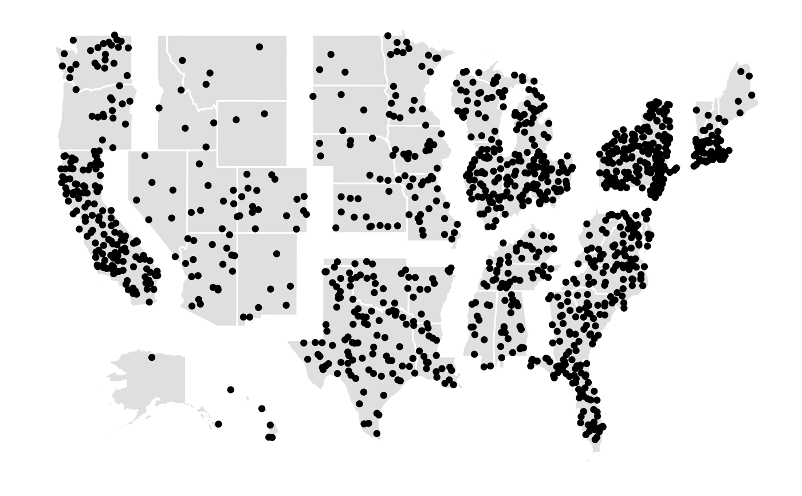

StatPolygon_jitter.Rdggplot2 stat for creating a sample of jittered points in a polygon
StatPolygon_jitter
An object of class StatPolygon_jitter (inherits from Stat, ggproto, gg) of length 4.
data(division) data(crimes) library(dplyr)#> #>#> #> #>#> #> #>#> Warning: Column `NAME`/`State` joining factors with different levels, coercing to character vectorggplot(data = crime.map, aes(x = long, y = lat)) + geom_polygon(aes(group = group), fill="grey90", colour="white", size = 0.5) + stat_polygon_jitter(aes(long = long, lat = lat, group = STATEFP, mapgroup = group, n = Population/200000)) + ggthemes::theme_map()#> Warning: Removed 10 rows containing non-finite values (stat_polygon_jitter).